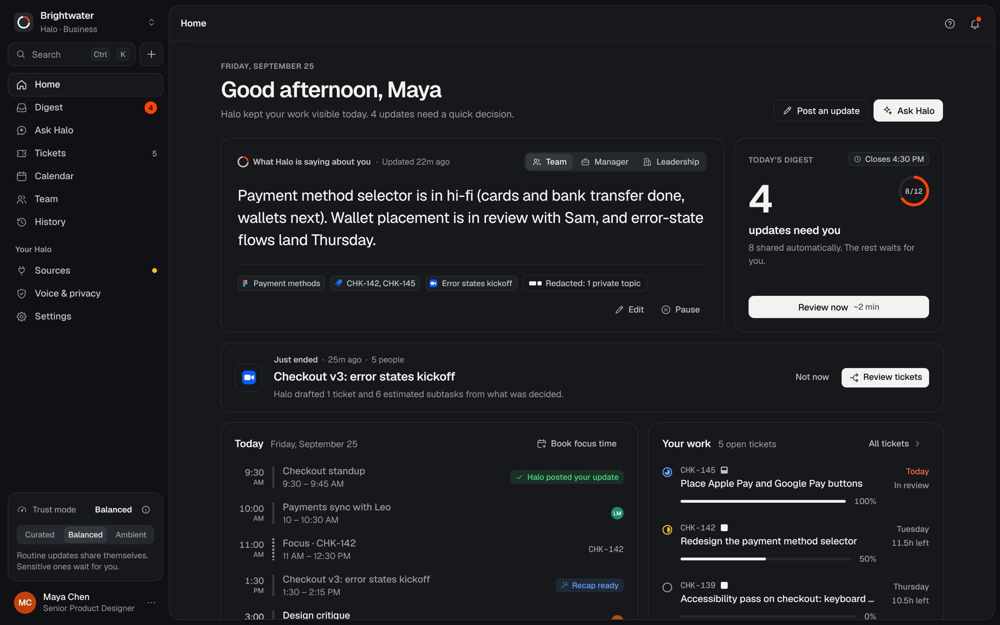
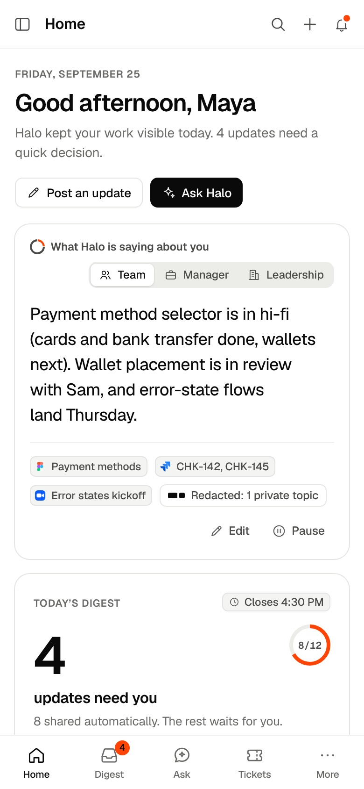

01AI product · Stanford capstone · 2026
Halo
Your work, represented.
I designed an AI layer that turns the work people already do, from meetings and commits to design edits and tickets, into status updates in their own voice, sized for a teammate, a manager or an executive. It speaks for you, never about you.


- Goal
- Take status updates off people’s plates without turning their work into something to be monitored.
- Challenge
- An AI that talks about your work has to earn trust: what it shares, who sees it, and when you get a say.
- Result
- A complete working product with a single trust dial (Curated, Balanced, Ambient), a full brand system and an 84-second launch film.